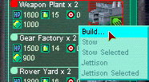
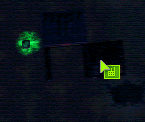

By Now you have collected enough transium to start building your base.
| Click on the Building inventory icon and expand the Nerve Center record. Find the "Weapon Plant" Jitter, right click on the icon, and select build. |  |
| If you haven't mined enough Transium, you will be told. Look at the Weapon Plant Jitter to see how much is required; tooltips will appear where the mouse cursor is held. When you have enough Transium, build the Weapon Plant. Build all other construction facilities in the same way. |  |